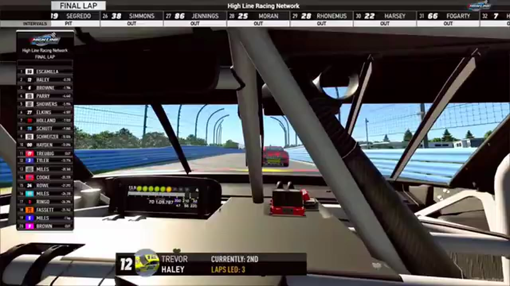

Escamilla Controls the Glen
Juan Escamilla won the stage and the race, Trevor Haley followed him home, and Jacob Brown completed the recovered podium.

Juan Escamilla owned the beginning and the end at Watkins Glen. He took the supported stage, returned to the front after the race’s pit and repair cycles, and spent the final lap with Trevor Haley close behind but unable to produce the pass. Jacob Brown finished third, giving HLRN one of its first especially clean complete podiums. In a season often shaped by late wrecks and reviewed superspeedway stripes, the Glen belonged to a driver who established control at the checkpoint and recovered it for the finish.
The opening green launched a road-course race that quickly tested more than outright pace. Ricky Miles and Matt Brown appeared in an early caution replay while the stage order was forming. Escamilla reached the stage line first, creating the most important early fact, but the incidents that followed kept the race from becoming a simple uninterrupted drive.
Eric Hayden and Jim Sagredo surfaced in the next caution review, and James Ringo was caught in another. The repeated interruptions narrowed the clean green-flag windows and made track position vulnerable to every stop. Craig Rowe and Aaron Trebig later appeared in the broadcast’s damage check, adding another repair question to a race in which drivers needed to remain mechanically and strategically available for the final run.
Escamilla’s stage did not mean he would keep the lead through every cycle. Haley inherited the point before making his final stop, briefly placing the eventual top two in reversed order. That handoff is central to the race’s tension: Haley could use pit timing to occupy the lead, but he still needed a lasting route to keep it once the sequence completed.
A competition caution opened a repair window and compressed the field again. Ryan Wilson joined the booth before the restart, and the race leader later did the same under caution, giving the broadcast time to assess a field that had spent much of the night being reassembled. Randy Showers appeared in a later caution replay. None of those moments changed the accepted podium by themselves, but each reduced the distance over which Escamilla could rebuild his earlier advantage.
That compression favored Haley’s immediate track position but also removed the cushion that pit timing had briefly created. On a road course, the leader could not rely on drafting help to repair a poor corner; every braking zone offered the second-place car an independent chance to close. Escamilla’s task was to retake control before the restart rhythm hardened around Haley. Brown’s task was different. He needed to remain attached to the front two while the repair cycles and cautions removed other cars from a clean route to the finish.
The three eventual podium drivers therefore entered the final run with distinct arcs. Escamilla had the stage and the best evidence of sustained pace. Haley had used the pit sequence to reverse their order and force the winner to pass back through the race’s changing conditions. Brown had avoided becoming another name in the damage checks and held the position behind them. The Glen did not need a late pileup to create tension; it needed one uninterrupted lap in which Escamilla had to defend everything he had rebuilt.
The final run restored the stage winner to the point. Haley stayed directly on Escamilla’s tail through the closing lap, near enough to make the leader defend but not close enough to establish a completed move. Central does not invent a lunge that the tape does not show. Brown held third behind the teammates and remained there through the checkered sequence.
The result was unusually direct: Escamilla first, Haley second, Brown third. All three positions are supported in order, which allows the race to carry more historical weight than a winner-only file. Escamilla added a feature win to his stage result, Haley gained another high finish without a supported P1, and Brown entered the season’s podium record with an exact position.
A separate controversy involving Rowe and Jerry Fassett under caution appeared in the companion program and its produced confrontation. The contact belongs in the race record as an observed sequence, but the show’s character-driven aftermath is not a race-control ruling. Keeping those lanes separate lets Central preserve the incident without using entertainment framing to assign fault, penalty, or motive.
Brown’s third place gives the race an additional measure of continuity. While Escamilla and Haley traded the lead through the final stop sequence, Brown stayed close enough that neither could treat the contest as private. One error by the teammates would have changed more than their order; it would have opened P2 or P1 to the car behind. His podium therefore completes the competitive picture of the last lap: Escamilla defending, Haley pursuing, and Brown preserving the pressure that made both positions valuable.
Watkins Glen’s importance comes from clarity rather than spectacle. The race passed through cautions, damage checks, a repair window, and a temporary lead change through the final pit cycle. Yet when the decisive lap arrived, the competitive order matched the earliest supported signal: Escamilla in control. Haley applied the final pressure, Brown completed the podium, and HLRN left the Glen with a three-position result strong enough to support every one of their driver dossiers.
Receipts behind the report
These links open the exact HLRN source windows used by the editorial file.
- OPENING · STAGE
Escamilla banks the road-course stage
Juan Escamilla reaches the stage line with Jacob Brown behind him.
▶ 1:21 SOURCE WINDOW - MIDDLE · INCIDENT
A caution-lane collision becomes the controversy
The companion program revisits contact involving Jerry Fassett and Craig Rowe under caution.
▶ 1:39 SOURCE WINDOW - CLOSING · FINISH
Haley shadows Escamilla through the final lap
Trevor Haley stays within reach, but Escamilla protects the lead to the checkered.
▶ 3:39 SOURCE WINDOW - CLOSING · RESULT
The Glen podium is read in order
HLRN confirms Escamilla first, Haley second, and Jacob Brown third.
▶ 4:30 SOURCE WINDOW
The top three are supported; the rest of the finishing order remains open. The Show's confrontation scene is produced entertainment.